Damit eine Signatur als gültig erkannt wird muss ein so genanntes Root-Zertifikat installiert sein.
D.h. Root Certification Authorities bestätigen in letzter Instanz die Echtheit von Zertifikaten.
In diesem Dokument werden als Beispiel die A-CERT Zertifikate verwendet. Der im Dokument dargestellte Ablauf gilt natürlich auch für andere Zertifikatsdiensteanbieter.
A-CERT sollte als Root-Zertifikat standardmäßig im Browser "Microsoft Internet Explorer (ab IE 6.0)" eingetragen sein. Dies ist jedoch nicht immer zwingend der Fall und muss daher kontrolliert werden.
Kontrolle im Internet-Explorer
Im Internet-Explorer kann kontrolliert werden ob das Root-Zertifikat in den Zertifizierungsstellen eingetragen ist.
Dazu muss im Internet-Explorer der Menüpunkt "Extras/Internetoptionen" aufgerufen werden; ins Register "Inhalte" gewechselt werden, und dort der Button "Zertifikate" angewählt werden:
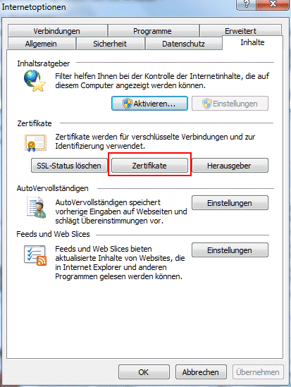
Im sich öffnenden Fenster "Zertifikate" muss das Register "Zwischenzertifizierungsstellen" angewählt werden.
In der angezeigten Liste muss sich der Eintrag "A-CERT ADVANCED" ausgestellt von "A-CERT ADVANCED" befinden.
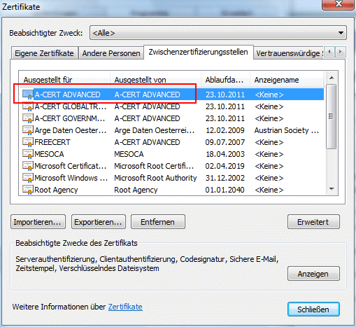
Ist dies nicht der Fall muss dieses Zertifikat "installiert" oder "importiert" werden.
Auf der Internet-Seite von A-Cert gibt es im Bereich Support den Eintrag "Manuelle Installation der A-CERT Root Zertifikate"; oder auch aufzurufen unter http://www.a-cert.at/php/cms_monitor.php?q=PUB-TEXT-A-CERT&s=08305wjt.
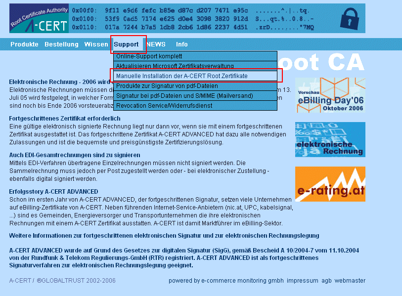
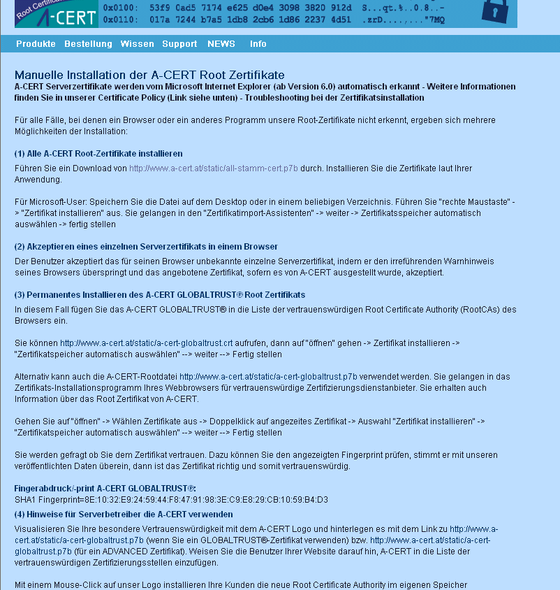
Auf dieser Seite stehen die Zertifikate von A-CERT zum Download zur Verfügung.
Download eines Root-Zertifikates
Um das Zertifikat "A-CERT ADVANCED" installieren/importieren zu können, muss dieses zuerst gespeichert werden.
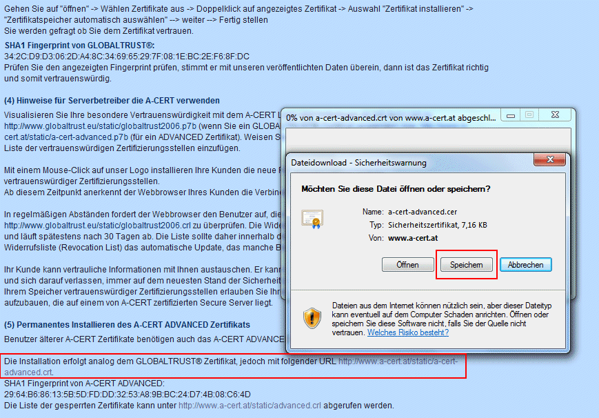
Nachdem die Dateien gespeichert wurden können die Zertifikate installiert werden.
Dazu muss die Datei mittels rechter Maustaste angewählt und der Eintrag "Zertifikat installieren" im Kontextmenü gewählt werden:
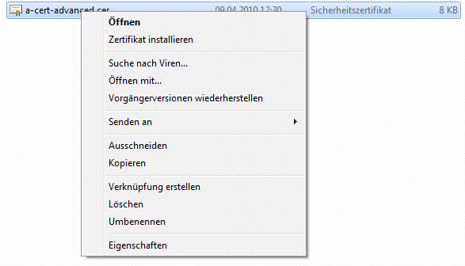
Dadurch öffnet sich der Zertifikatsimport-Assistent in dem der erste und zweite Schritt mit "Weiter" bestätigt werden muss, und im letzten Schritt der "Fertig stellen"-Button gedrückt werden muss.
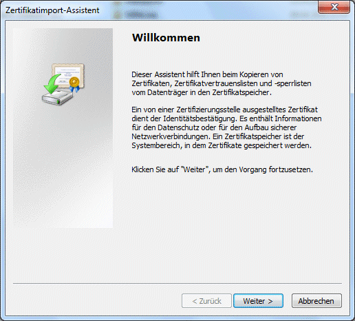
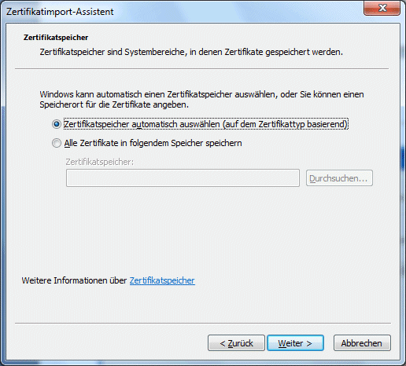
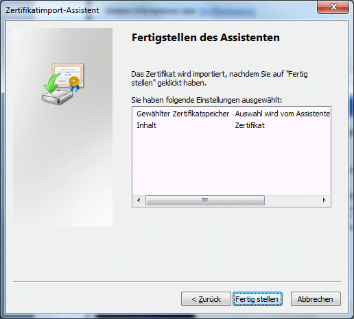
Um ein Zertifikat importieren zu können muss dieses ebenfalls zuerst abgespeichert werden (siehe Download eines Root-Zertifikates).
Der Import der Zertifikate kann z.B. im Internet Explorer/Internetoptionen/Inhalte/Zertifikate (siehe dazu auch unter Kontrolle im Internet-Explorer) erfolgen.
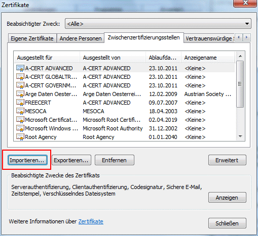
Um ein Zertifikat zu importieren muss der Importieren-Button angewählt werden.
Es öffnet sich dadurch wieder der Zertifikatsimport-Assistent in dem im zweiten Schritt die zu importierenden Datei angegeben werden muss:
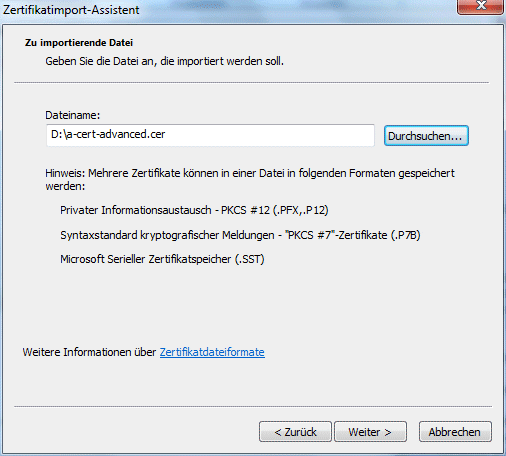
Im nächsten Schritt muss angegeben werden wohin das Zertifikat gespeichert werden soll:
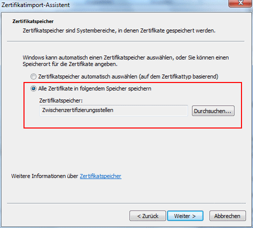
Hier muss als Zertifikatsspeicher "Zwischenzertifizierungsstellen" angegeben werden.
Nachdem der letzte Schritt des Assistenten bestätigt wurde erfolgt die Meldung dass der Importvorgang erfolgreich war.
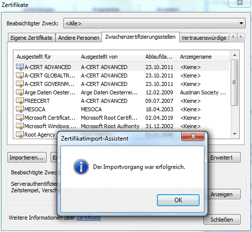